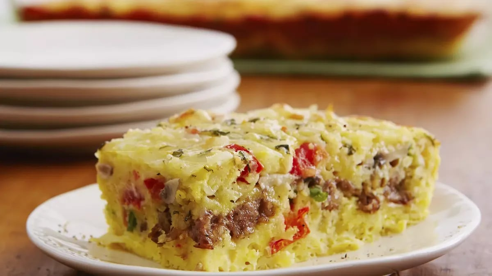

Cheesy Sausage and Egg Bake

Prep Time: 25 Min Total: 60 Min Servings: 12 Ingredients: 11
INGREDIENTS
- 1 pound bulk pork sausage, cooked and drained
- 1 1/2 cups sliced fresh mushrooms (4 ounces)
- 8 medium green onions, sliced (1/2 cup)
- 2 medium tomatoes, seeded, chopped (1 1/2 cups)
- 2 cups shredded mozzarella cheese (8 ounces)
- 1 1/4 cups Bisquick™ Original pancake & baking mix
- 1 cup milk
- 1 1/2 teaspoons salt
- 1 1/2 teaspoons chopped fresh or 1/2 teaspoon dried oregano leaves
- 1/2 teaspoon pepper
- 12 eggs
INSTRUCTIONS
- Heat oven to 350°F. Grease rectangular baking dish, 13x9x2 inches. Layer sausage, mushrooms, onions, tomatoes and cheese in dish.
- Stir remaining ingredients until blended. Pour over cheese.
- Bake uncovered 30 to 35 minutes or until golden brown and set.